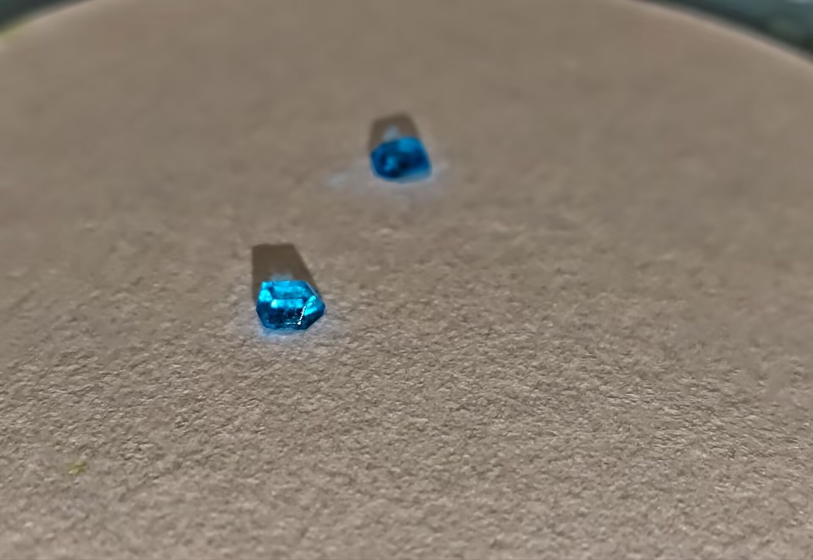
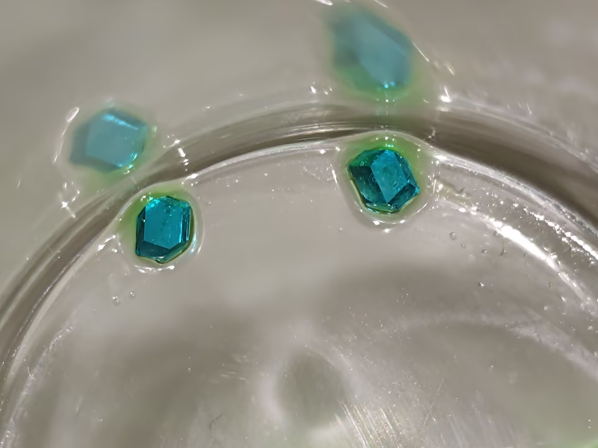

二水四氯合铜酸铵篇

图源：不明就里的乙酸铜

图源：迷路的野指针

图源：迷路的野指针
🎯 预览
- 难度等级：★★★☆☆ (中高级)
- 实验耗时：约30分钟（不含干燥）
- 单晶培养：数天至数周
- 推荐人群：有一定配位化学基础
- 二水合氯化铜 CuCl2·2H2O
- 氯化铵 NH4Cl（或氯化钾 KCl）
- 蒸馏水
- 无水乙醇（仅用于洗涤）
- 过滤与干燥器材
一、背景化学知识
1.1 铜(II)-氯配合物家族
铜(II)离子与氯离子能形成一系列具有鲜艳色彩的配合物。以下是常见成员：
将氯化铜的酸溶液与季铵盐盐酸的醇溶液混合，可沉淀出橙黄色的四氯合铜酸盐。该配离子为平面四边形结构，极易被水破坏。
CuCl2 + 2NR4Cl ──→ (NR4)2[CuCl4]↓
将氯化铜的乙醇溶液与氯化钾的乙酸溶液混合，可沉淀出砖红色的双核平面配位配合物（此外也有三核或多核形式）。
2CuCl2 + 2KCl ──→ K2[μ2-Cl(CuCl2)2]↓
铜离子与四个氯离子在平面形成四配位，轴向上下各与一个水分子配位，构成六配位畸变八面体。
1.2 目标化合物属性
Ammonium tetrachlorocuprate dihydrate
1.3 结构特点
二、实验制备
2.1 原料准备与安全提示
氯化铵 NH4Cl — 0.2 mol（约 10.69 g）
无水乙醇（仅用于洗涤）
蒸馏水 约 50 mL
碎冰渣（用于冰水浴）
无水乙醇具有挥发性和易燃性，需注意防火安全
但不可用氯化钠 (NaCl) 代替。因为钠离子半径较小，难以形成该配位流派的稳定晶体结构，容易析出复杂的混合物
2.2 实验操作流程
2.3 化学方程式
[Cu(H2O)2Cl2] + (x-2)H2O + (2-x)Cl- ⇌ [Cu(H2O)xCl4-x]x-2
(x = 0 ~ 4)
溶液中存在多种铜-水-氯配离子的动态平衡。加热搅拌促进了各配离子之间的相互转化。
[Cu(H2O)xCl4-x]x-2 + xCl- + 2NH4+ + (2-x)H2O
→ (NH4)2[Cu(H2O)2Cl4]↓
(x = 0 ~ 4)
冷却降温使平衡向析出方向移动，最终产物为稳定的六配位 trans 构型。
2.4 产率计算
理论产量：27.75 g
最终产率：42.3%
2.5 大颗粒单晶培养
该物质可以通过特定晶体生长方法来制备出非常大颗且清澈透亮的浅蓝色单晶，极具观赏价值。
- 用已制得的碎晶重新配制不饱和水溶液，过滤后静置蒸发
- 使用晶种悬挂法使晶体各面均匀生长
- 控制温度稳定在20-25℃，避免震动
- 成品用透明指甲油涂抹表面或环氧树脂封装保存
详细操作参考晶体保存篇
三、安全与注意事项
3.1 危险性
- 铜毒性：二水合氯化铜具有毒性和腐蚀性。误食含铜化合物会引起恶心、呕吐、腹痛，严重时可导致肝损伤
- 皮肤刺激：氯化铜接触可能引起皮肤刺激和过敏反应
- 眼部危害：接触眼睛会导致严重刺激，需立即用清水冲洗并就医
- 环境危害：铜离子对水生生物有毒，废液不可直接倒入下水道或自然环境
- 乙醇易燃：洗涤用无水乙醇具有挥发性和易燃性，远离火源
3.2 防护与应急
- 操作时务必佩戴丁腈手套和护目镜，穿实验服
- 涉及加热和搅拌操作时注意烧杯固定，防止倾倒
- 冰水浴降温时注意烧杯温差应力，避免玻璃器皿炸裂
- 废液处理：加入过量碳酸钠使铜离子沉淀为碳酸铜，过滤后固体按重金属废物处理
- 急救：误触眼睛立即用大量清水冲洗至少15分钟并就医；误食立即漱口并就医，不可催吐
3.3 禁止事项
- 禁止在无防护条件下直接接触原料或溶液
- 禁止将废液直接倒入下水道
- 禁止用氯化钠替代氯化铵/氯化钾（会得到复杂混合物而非目标晶体）
- 禁止让未成年人独立操作
- 禁止在食物附近进行操作或存放
四、成果展示与质量评估
优质晶体特征
- 颜色均匀，呈鲜艳的蓝绿色
- 晶粒完整，表面光滑无裂纹
- 干燥后色泽保持稳定
- 无明显杂质夹杂
- 晶体发白或颜色暗淡 - 干燥不彻底或杂质过多
- 晶体过小呈粉末状 - 冷却速度过快
- 晶体粘连成块 - 过滤前未充分散开
- 颜色偏黄或偏褐 - 原料纯度不足或有铁杂质
五、问题诊断与解决
常见问题排查
问题一：冷却后不出晶或出晶过少
- 可能原因：溶液浓度过低（水量偏多）、冷却温度不够低、溶液未充分加热溶解
- 解决方案：将溶液适当加热浓缩减少水量后重新冷却；或从开始就减少蒸馏水用量；确保冰水浴温度足够低
问题二：溶液加热后仍浑浊，固体未完全溶解
- 可能原因：水量不足、加热时间不够、搅拌不充分
- 解决方案：补加少量蒸馏水（每次5 mL），继续加热搅拌至完全澄清
问题三：晶体颜色偏暗或发灰
- 可能原因：原料含铁等金属杂质、容器不洁净、用 NaCl 替代了 NH4Cl
- 解决方案：换用分析纯级别原料，清洁所有器材，确保使用 NH4Cl 或 KCl
问题四：抽滤后晶体在干燥过程中潮解
- 可能原因：空气中湿度大、乙醇洗涤不充分、未及时放入干燥器
- 解决方案：增加乙醇洗涤次数，抽滤时尽量抽干，立即转移至干燥器；可在干燥器中放入变色硅胶
六、科学原理
6.1 配位化学
6.2 颜色成因与姜-泰勒效应
6.3 结晶条件分析
6.4 热致变色现象
(NH4)2[Cu(H2O)2Cl4] ──→ (NH4)2[CuCl4] + 2H2O↑
蓝绿色（六配位） → 橙黄色（四配位） | 冷却后加水汽即复原
6.5 晶体学数据
c = 7.946 Å
α = β = γ = 90°
晶胞体积 V ≈ 456.3 Å3
Cu—O（轴向位）：2.76 Å（×2，显著拉长）
轴向键比赤道键长约 21%，是姜-泰勒效应的直接证据。NH4+ 与 [Cu(H2O)2Cl4]2- 之间通过 N—H···Cl 氢键形成三维超分子网络。
七、应用领域
八、教程视频参考
视频教程
如果您想通过视频更直观地学习二水四氯合铜酸铵的制备过程，可以参考以下视频：
该视频详细展示了从称量溶解到冰水浴冷却结晶、真空抽滤的全过程，适合视觉学习者参考。